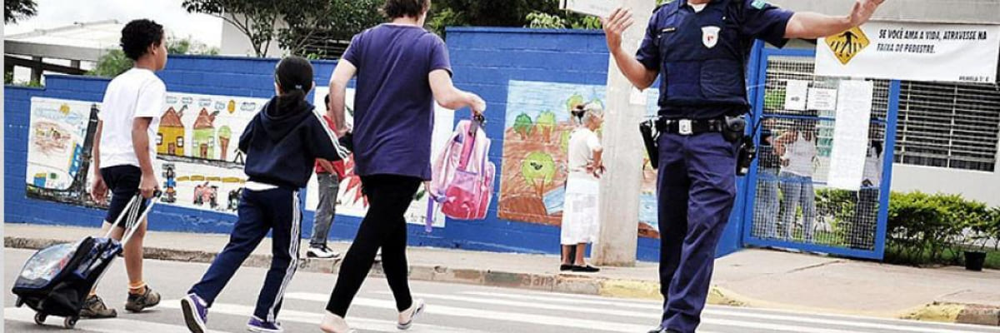

Está em tramitação no Senado uma proposta que inclui as guardas municipais no rol dos órgãos de segurança pública. A PEC 28/2022, do senador Fernando Bezerra Coelho (MDB-PE), prevê adicionar novo inciso ao artigo 144 da Constituição Federal para que o rol seja atualizado. Hoje estão incluídas as polícias Federal, civil, militar, rodoviária, ferroviária e penal, além de corpo de bombeiros militar
 https://jundiai.sp.gov.br/noticias/2013/07/23/guarda-municipal-define-planejamento-da-ronda-escolar-para-o-segundo-semestre/A proposta foi apresentada após recente decisão do Superior Tribunal de Justiça (STJ) que, ao julgar um pedido de habeas corpus, declarou ilegais as provas colhidas em revista pessoal feita por guardas municipais durante patrulhamento rotineiro, absolvendo o réu do caso.
A 6ª Turma do STJ considerou ilegalidade das provas porque a categoria não é definida como órgão de segurança pública, o que limita a ação dos agentes à proteção de bens, serviços e instalações do município.